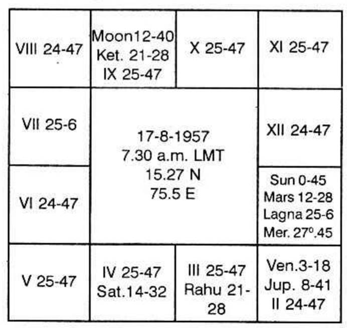

Heart means the organ of the body which receives both the pure and impure blood and circulates throughout the body to carry the food and to bring back the waste in the system. It is both a sump well getting filled with pure and wholesome/liquid and cesspool receiving the deoxidised blood. Also it is the pumping set. Heart means affection also.
Mr. Podumanai Chomadri in Jatakadesa marga refers to each part of the body and advises which part we have to judge to note the disease or defect of an organ.
Divide each sign into three equal parts so that each extends to 10 dec.
Always count from the Lagna sign.
First decanate: i.e. first ten degrees indicate from the Lagna sign 1. Head; 2. Right eye; 3. Right ear; 4. Right nostril; 5. Right cheek; 6. Right jaw; 7. Mouth; 8. Left jaw; 9. Left cheek; 10. Left nostril; 11. Left ear; 12. Left eye.
Second decanate: i.e. 10th to 20 degree in each sign counted from the Lagna sign. 1. Neck; 2. Right shoulder; 3. Right arm; 4. Right portion of body; 5. Right side of heart; 6. Right side of the chest; 7. Navel portion; 8. Left chest; 9. Left side of the heart; 10. Left side of the body; 11. Left arm; 12. Left shoulder.
Third decanate: i.e. when counted from the lagna sign in each sign 20 degrees to 30 degrees represent in order, Pelvis, generative system, Right testicle, Right thigh, Right knee, Right leg calf muscle, both the legs, left calf muscle, left patella, left thigh, left testicle and at last the Anus.
The above is the same given by Sri Ramadayalu in Sankedanidhi; in Chapter 4. Slokas 124 and 125.
Kalidas in Uttarakalamritha says that Moon denotes Heart whereas Sun and Mars denote blood.
Prithuyasa in Horasara states that Moon in Aquarius will cause heart disease and also that when it is in Aquarius at birth and when its dasa is running one will develop heart disease.
Mantraeswara in Paladeepika says that Rahu causes the palpitation of the heart. He says that the character of one's heart, meaning affection, etc., is to be judged from Moon.
Thus there are various statements and before one takes a decision to follow any, his next birth will approach.
All westerners are of the same opinion that the 5th house represents heart and Sun indicates heart. Other planets connected with Sun and afflicting Sun denotes the various types of the disease.
Mr. Parimal Purkayastha in his book "Indian Astrology and Diseases" appears to have a compromise. He says "Heart diseases are disordered action of heart …… Karkataka rasi is the sea of heart in natural zodiac. Fourth house governs the same. Moon is Karaka for heart and sun rules the heart diseases." He adds "So the affliction of Sun, Moon, Mars, Karkat rasi, fourth house, lord of 4th house etc., and any relation to any of them with 6th house, lord of the 6th house, Kanya rasi or with disease inflicting house or planet, give rise to the disease of the heart.
What does Krishnamurti Padhdhati say?
1. Lagna shows health. It does not mean that it guarantees good health. It depends on the sub-lord of the Ascendant. i.e., If the sub-lord of the Ascendant is in the constellation of the significator of 6 or 8 or 12 then one suffers from disease or faces danger or is hospitalised.
2. 6th house indicates disease. It affects one's health.
3. 8th house threatens danger.
4. 12th house is for hospitalisation.
Significators of the 6th indicate disease in their conjoined periods or sub-periods.
In this chart given below the Lagna is in 25 deg. 6 minutes in Leo. It is in Venus constellation and Mercury sub.

What does Mercury indicate and what he will give in his time. He is the significator of the houses 12, 1, 2 and 11. Hence Mercury shows that one will be in bed as it is the significator of 12 and since it is in Leo due to heart disease. As it is Mercury, it may be neuro-circulatory Asthenia or nervous disease of the heart.
Saturn aspecting Mercury denotes that it will be a chronic one.
Sixth house is unoccupied. It is owned by Saturn and Saturn alone is in its constellation. During its period there will be difficulty in the pulmonary system.
8th house is occupied by Moon and Ketu. Sun, Moon and Mars are all in Ketu star and no planet is in Moon's star.
12th house is occupied by Sun and Mars and owned by Moon.
Therefore this native is to run according to his chart dasas of Venus, Sun, Moon and Mars. All these are to cause disease and danger.
Cure is to be seen from the 5th and the 11th houses. Jupiter, Mercury (5th & 11th house owner respectively) and Venus conjoined with Jupiter alone can cause the cure and it will be during Venus Dasa, Mercury Bhukti, Jupiter Anthra.
It will be in July 1976 when Sun transits in Punarvasu in the 11th house. Sun, Mars and Mercury in the same sign indicate that he will be cured by a surgeon (Sun Dhanvantry; Mars Surgery).